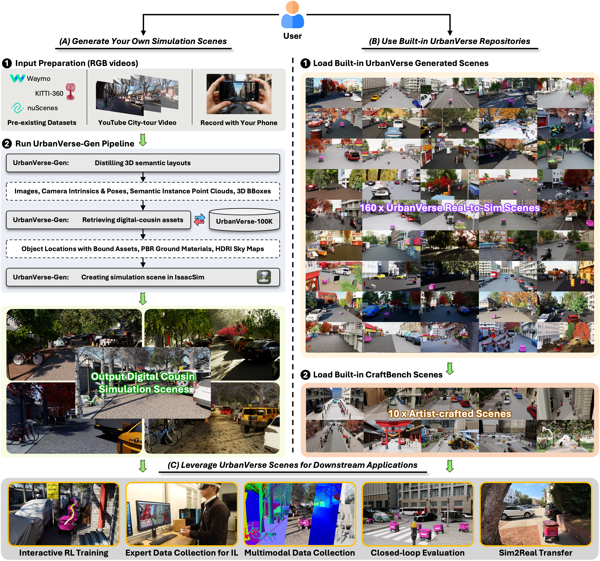

Welcome to UrbanVerse!#
UrbanVerse#
UrbanVerse is a unified real-to-sim system built on the UrbanVerse platform with Nvidia IsaacLab as the simulation engine for robot learning in urban environments. It converts casually captured, uncalibrated city-tour videos into fully interactive simulation scenes, enabling users to build realistic, layout-accurate environments and train their own robots at scale.
Core Components#
UrbanVerse is powered by two main modules:
UrbanVerse-100K — a large-scale dataset of (a) Object Collection: 102,530 urban 3D assets across 667 categories, each annotated with 33 semantic, physical, and affordance attributes in true metric scale; (b) Ground Texture Collection: 288 4K photorealistic PBR materials (98 road, 190 sidewalk) for ground plane texturing; (c) Sky Collection: 306 4K HDRI sky maps for realistic global illumination and immersive 360° backgrounds.
UrbanVerse-Gen — an automatic pipeline that extracts scene layouts from video and instantiates metric-scale simulations using retrieved assets.
Built-in Urban Simulation Environments#
We provide ready-to-use (pre-built) urban simulation environments for training and evaluation, each packaged as a standalone .usd file that can be directly loaded into the IsaacLab platform:
UrbanVerse-160 — a collection of 160 pre-built environments reconstructed from city-tour videos across 7 continents, 24 countries, and 27 cities, available for training and validation.
CraftBench — a suite of 10 high-fidelity urban scenes created by professional 3D artists, reserved exclusively for test-time evaluation.
Open-Source Release#
We will fully open-source the following UrbanVerse resources for the community, and we stand by this commitment:
Content |
Platform |
Format |
Release Month |
|---|---|---|---|
UrbanVerse-100K Asset Database |
Hugging Face |
|
January 2026 |
160 UrbanVerse Scenes |
Hugging Face |
|
January 2026 |
CraftBench Scenes |
Hugging Face |
|
January 2026 |
UrbanVerse-Gen Pipeline |
GitHub |
|
February 2026 |
RL Training Scripts and Checkpoints |
GitHub |
|
February 2026 |
UrbanVerse-100K Annotation Tool |
GitHub |
|
January 2026 |
Documentation & Tutorials |
GitHub |
|
January 2026 |
User-Side Pipeline Overview#
The diagram below illustrates the complete user workflow in UrbanVerse, covering both custom scene generation and the use of built-in simulation scenes.
{kind=link}

(A) Generate Your Own Simulation Scenes using UrbanVerse-Gen Automatica Pipeline#
Input Preparation:
Accepts YouTube clips or URL, phone-recorded city-walk videos, pre-existing datasets, or folders of RGB frames (see Real-to-Sim Scene Generation with UrbanVerse-Gen for more details).
All inputs are normalized into sequential images for scene distillation.
Run UrbanVerse-Gen Pipeline:
Generate your own simulation scenes using UrbanVerse-Gen APIs automatically (see Real-to-Sim Scene Generation with UrbanVerse-Gen for more details).
Extracts camera intrinsics/poses, metric depth, 3D instance point clouds, instance masks, and 3D boxes, producing a unified distilled scene graph (objects, ground, sky).
Materializes the scene graph by retrieving mutiple matched assets from UrbanVerse-100K (see Use UrbanVerse-100K with APIs for more details), including 3D GLB objects PBR ground materials, and HDRI sky maps.
Create and export fully interactivedigital-cousin simulation scenes in Isaac Sim with metric placement, physics, and lighting.
(B) Use Built-in Simulation UrbanVerse Repositories#
You can also directly use the built-in simulation UrbanVerse scene repositories we provided, including:
UrbanVerse-160: A collection of 160 real-to-sim city scenes generated by UrbanVerse-Gen from city-tour YouTube videos acorss the world (See Use Built-in UrbanVerse Scenes for more details).
CraftBench: A suite of 10 artist-crafted simulation scenes, useful for benchmarking policy robustness and generalization. (see Use Built-in CraftBench Scenes for more details).
(C) Leverage UrbanVerse Scenes for Downstream Applications#
Using either custom-generated scenes or built-in scene repositories, UrbanVerse supports:
Reinforcement Learning: Train navigation policies in UrbanVerse scenes using reinforcement learning (PPO) (see Reinforcement Learning in UrbanVerse for more details).
Expert Data Collection for Imitation Learning: Collect expert demonstrations from teleoperation (keyboard, joystick, gamepad, VR), and train behavior cloning policies (see Imitation Learning in UrbanVerse for more details).
Multimodal dataset collection: Collect offline multimodal dataset (RGB, depth, normals, segmentation, poses, etc) from UrbanVerse scenes for training and evaluation (see Collecting Data in UrbanVerse for more details).
Closed-loop evaluation: Evaluate the performance of the trained policies in UrbanVerse scenes (see Test Your Robots on CraftBench for more details).
Zero-shot Sim2Real deployment: Deploy the trained policies on real robot platforms (see Real-world Deployment: Unitree Go2 Quadruped Example for more details).
License#
This work, UrbanVerse, is released under the Creative Commons Attribution 4.0 International (CC BY 4.0) License, which permits sharing and adaptation with appropriate credit.
Table of Contents#
User Pipeline Overview
Installation
Gallery
Quickstart Guide
Robot Learning with UrbanVerse
Developer Guide (Advanced)
API Reference
UrbanVerse Community
References